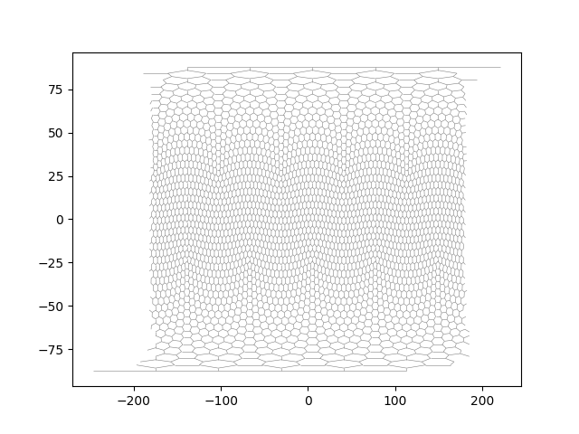
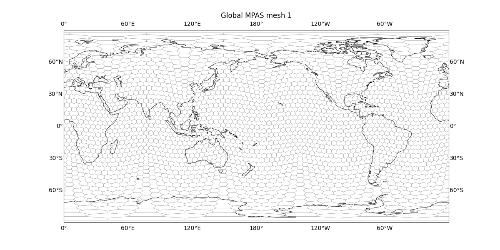
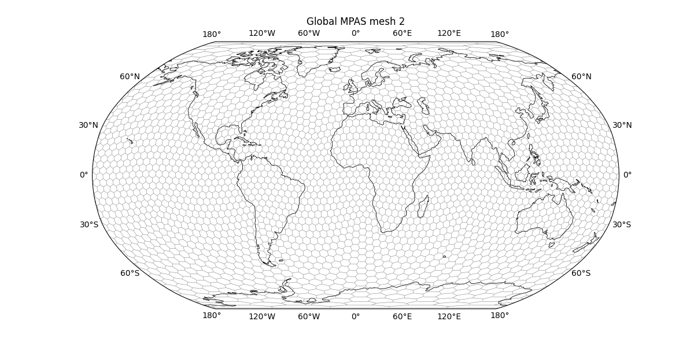
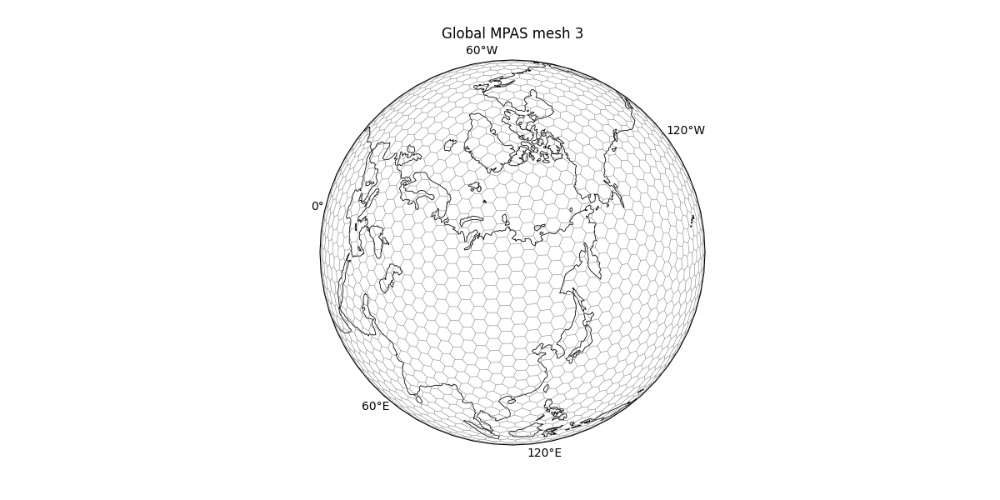

Note
Go to the end to download the full example code.
MPAS/Voronoi grid¶
This example shows how to draw the edges of an MPAS Voronoi mesh with
easyclimate.plot.mpas.plot_voronoi_grid.
The same mesh can be displayed on a plain Matplotlib axes or on Cartopy map projections. Longitude wrapping and dateline-crossing mesh edges are handled by the plotting helper.
import xarray as xr
import numpy as np
import cartopy.crs as ccrs
import matplotlib.pyplot as plt
import easyclimate as ecl
from easyclimate.plot.mpas import plot_voronoi_grid
Open a sample MPAS mesh dataset. The grid file contains MPAS connectivity
variables such as verticesOnEdge as well as vertex coordinates.
data = ecl.open_tutorial_dataset("x1_2562_grid")
data
x1_2562_grid.nc ━━━━━━━━━━━━━━━━━━━━━━ 100.0% • 1.6/1.6 MB • 54.4 MB/s • 0:00:00
Draw the mesh directly on the current axes.

<matplotlib.collections.LineCollection object at 0x7f95317df890>
Plot the global mesh on a PlateCarree map. When the target axes is a Cartopy GeoAxes, the helper automatically supplies a PlateCarree transform unless a different transform is passed explicitly.
fig = plt.figure(figsize=(12, 6))
ax = plt.axes(projection=ccrs.PlateCarree(180))
ax.coastlines(resolution="110m", linewidth=0.6)
plot_voronoi_grid(data, ax = ax, transform=ccrs.PlateCarree());
ax.set_global()
ax.gridlines(draw_labels=True, alpha = 0)
ax.set_title("Global MPAS mesh 1")

Text(0.5, 1.0453342943342954, 'Global MPAS mesh 1')
The same MPAS mesh can be displayed with another global projection.
fig = plt.figure(figsize=(12, 6))
ax = plt.axes(projection=ccrs.Robinson(0))
ax.coastlines(resolution="110m", linewidth=0.6)
plot_voronoi_grid(data, ax = ax, transform=ccrs.PlateCarree());
ax.set_global()
ax.gridlines(draw_labels=True, alpha = 0)
ax.set_title("Global MPAS mesh 2")

Text(0.5, 1.0453342943342951, 'Global MPAS mesh 2')
Orthographic projection is useful for inspecting a regional portion of the global unstructured grid.
fig = plt.figure(figsize=(12, 6))
ax = plt.axes(projection=ccrs.Orthographic(central_longitude=110.0, central_latitude=70.0))
ax.coastlines(resolution="110m", linewidth=0.6)
plot_voronoi_grid(data, ax = ax, transform=ccrs.PlateCarree())
ax.set_global()
ax.gridlines(draw_labels=True, alpha = 0)
ax.set_global()
ax.set_title("Global MPAS mesh 3")

Text(0.5, 1.0381854681723834, 'Global MPAS mesh 3')
Total running time of the script: (0 minutes 15.667 seconds)